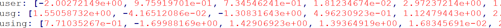

ABSTRACT
Polysemy in natural language texts is the coexistence of many possible meanings for a word or phrase in different contexts. However, due to different nature, in source code, some code tokens and statements exhibit polysemy while other tokens (e.g., keywords, separators, and operators) or statements maintain the same meaning in different contexts. Polysemy is crucial in automated bug detection because some tokens/statements with the same lexemes are buggy in certain contexts, and not in others. Thus, several existing bug detection approaches have moved from using static word embedding models for code representation learning (CRL) to the contextualized models (i.e., the embeddings are sensitive to the surrounding contexts). While the intention and design mechanisms of contextualized CRL models are to capture the contextual information of program units in different representations (code sequences, ASTs, graphs), the key questions on the use of static, contextualized, or hybrid models remain unanswered due to the nature of mixed polysemy in source code as explained. We conducted our experiments on a total of 12 popular sequence- /tree-/graph-based embedding models and on samples of a dataset of 10,222 Java projects with +14M methods. We modified and adapted four evaluation metrics for contextuality from texts to code structures to evaluate the vector representations produced by those CRL models.We reported several important findings. For example, different CRL models exhibit different levels of contextuality: the models with higher contextuality help a bug detection model perform better than the static ones. However, the most important finding is that a simple hybrid model actually helps a machine-learning bug detection model perform better than both static and contextualized models. Thus, we call for actions to develop hybrid CRL models that fit with the mixed polysemy nature of source code.Experimental Results
Research Question 1.
Table 1. Average SelfSim for Sequence-based Models
Table 2. Average IntraSim for Sequence-based Models
Table 3. Average Maximum Explainable Variance (MEV) for Sequence-based Models
Table 4. Anisotropy: Average Cosine Similarity Among all Units for Sequence-based Models
Raw Data Snipe Shot:
Because the raw data and results amount from RQ1 to RQ3 are too huge (over 2M different token embeddings), we are unable to upload all of them in our webiste. We would like to show some code snipe shot here to make you can clearly understand our research.
